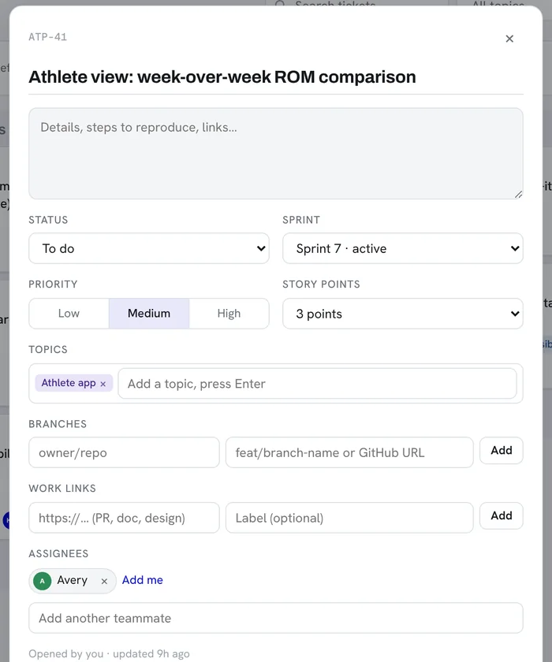

01Leading an 18-person team
I'm the lead project manager on Project Gravity, a two-year student game with an 18-person team of designers, artists, engineers, and audio designers. Since we're all students, I can't just tell people what to do, so a big part of my job is making the process easy and useful enough that people actually want to use it.
- I organized our first big outside playtest at UNC Greensboro with over 100 players, then turned their feedback into prioritized tasks for the next sprint.
- I got the audio team working in the same sprints as design and engineering, so sound wasn't always playing catch-up.
- I set up and run our Jira, Notion, and Perforce workflows for sprint tracking, docs, and day-to-day logistics.
02The ATP Board
At ATP we wanted to run real agile sprints with story points, priorities, and owners, but we didn't have the budget for paid project-management software. So I built our own with Claude. It's now the board our whole team works out of.

- Sprints: start and finish sprints, see days left and points done, and move anything unfinished to the next sprint or the backlog.
- Tickets: status, priority, story points, topics, more than one assignee, and linked GitHub branches and PRs.
- Live updates: changes show up for everyone right away. There's also search, topic filters, an "assigned to me" view, and keyboard shortcuts.
- Code Map: one click opens the ATP Code Map, so you can look at a ticket and the code it touches together.

This is a big part of how I think about AI. Used well, it lets a small team build exactly what it needs. We didn't have to pay for software we'd only half use, and the board fits how we actually work.
03A blur tool for our promo video
Our ATP promo video had a face and a few logos that needed to be blurred out. So I used Claude Design to build a small video editor that could blur and track them, and did it myself.
- Draw a box over anything you need to hide, hit Track, and the mask follows it frame by frame.
- Each thing gets its own mask, so the face, the chest logo, and the laptop stickers are all tracked separately.
- You can switch between ellipse and rectangle masks, change the blur strength and feather, step through frame by frame, and drag keyframes to fix them.
- When it looks right, it exports the blurred video.
04Marketing at ATP
I lead ATP's marketing strategy team and run our LinkedIn page. I also built our landing page, which is usually the first thing coaches and athletic programs see.
- I helped our team land a $50K grant and four pilot programs with NCAA Division I teams, including Duke and North Carolina Central University.
- I lead the team that handles our marketing and competitive research, figuring out where ATP fits next to other motion-analysis products.